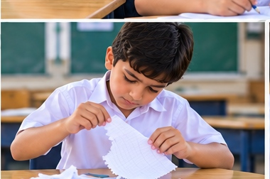
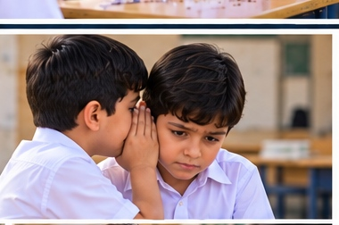
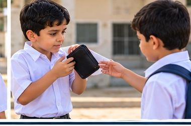

⛶
ما هو الكذب؟
الكذب هو أن يقول الإنسان شيئًا غير صحيح ليُخفي الحقيقة أو ليتجنب المسؤولية.
كيف تشرح معنى الكذب بكلمات بسيطة؟
الكذب لا يحل المشكلة
عندما نكذب قد نهرب من الموقف لحظةً، لكن المشكلة تبقى وتكبر مع الوقت.
هل الكذب ينهي المشكلة أم يزيدها؟
إخفاء الحقيقة نوع من الكذب
عندما نخفي شيئًا فعله أحدنا أو فعله هو بنفسه، فنحن لا نكون صادقين.
لماذا يعد إخفاء الحقيقة سلوكًا غير صحيح؟
الكذب لإلصاق الخطأ بغيرنا
بعض الأطفال يرمون الخطأ على غيرهم حتى لا يتحملوا النتيجة، وهذا ظلم للآخرين.
ماذا يحدث عندما نتهم شخصًا بريئًا؟
الغش صورة من صور الكذب
من ينقل الإجابة أو يدّعي أن العمل من جهده وهو ليس كذلك، لا يكون صادقًا.
لماذا يعد الغش نوعًا من الكذب؟
اختلاق الأعذار غير الصحيحة
بعض الأعذار ليست حقيقية، ويقولها الطفل حتى يتجنب اللوم أو العقوبة.
هل العذر غير الصحيح يساعد على بناء الثقة؟
إتلاف الأشياء ثم الإنكار

إذا مزق التلميذ شيئًا أو أتلفه ثم أنكر، فإنه يجمع بين الخطأ والكذب معًا.
ماذا يجب أن نفعل إذا أتلفنا شيئًا؟
التظاهر بالبراءة
أحيانًا يعرف الإنسان أنه أخطأ، لكنه يتظاهر بأنه لا يعرف شيئًا عما حدث.
هل التظاهر بالبراءة يغيّر الحقيقة؟
الكذب يفقد الثقة
عندما يعتاد الطفل على الكذب، يبدأ الآخرون بعدم تصديق كلامه حتى لو قال الحقيقة.
ما أثر الكذب في ثقة الناس بنا؟
نشر الكلام غير الصحيح
نقل كلام غير صحيح عن الآخرين يسبب الأذى والمشكلات بينهم.
كيف يؤذي الكلام غير الصحيح الزملاء؟
الكذب يسبب النزاع
قد يوقع الكذب بين الزملاء ويجعل كل واحد يلوم الآخر أو يغضب منه.
كيف يمكن أن يتحول الكذب إلى مشكلة بين الأصدقاء؟
أخذ شيء ليس لنا ثم إنكاره

إذا أخذ الطفل شيئًا يخص غيره ثم أنكر، فهو يجمع بين عدم الأمانة والكذب.
ما التصرف الصحيح إذا وجدنا شيئًا ليس لنا؟
الصدق يحتاج إلى شجاعة
قول الحقيقة يحتاج أحيانًا إلى شجاعة، خاصة عندما نخاف من نتيجة الخطأ.
لماذا يحتاج الصدق إلى شجاعة؟
الاعتراف بالخطأ أفضل من الكذب

عندما نعترف بخطئنا نستطيع إصلاحه، أما الكذب فيجعل الأمر أصعب.
أيّهما أفضل: الاعتراف بالخطأ أم الكذب؟
الصدق يريح القلب
الصادق يشعر بالراحة والطمأنينة، أما الكذب فيجلب القلق والخوف من انكشاف الحقيقة.
ما السلوك الذي ستختاره من اليوم: الصدق أم الكذب؟
السابق
التالي